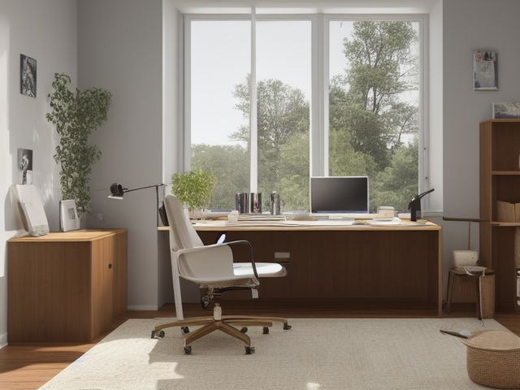

Home Office micro zone
The Primary Desk
One clear surface for the work you are actually doing right now.
One session: 45-75 min. most of it in Sort, because every item you lift off the surface needs a decision before it goes back

What done looks like
The monitor, keyboard, and mouse in fixed positions, one notebook, one inbox tray holding fewer than a dozen sheets, no sticky notes on the monitor bezel, and the power strip hooked off the floor so the chair rolls over bare carpet.
Check these before you start
- Water and electricityA mug of coffee sitting behind the keyboard on the same surface as a power strip and a laptop charger. Move drinks to the far side of the mouse, away from cables and the machine.
- FallCharger cables and the power strip lead running across the floor where the chair moves and where you push back to stand.
The six passes, in order
Work them in this order. Sorting after you have arranged things means arranging things you were about to remove.
Sort
Decide what stays. Everything else leaves the zone now.
Take everything off the surface and onto the floor, then put back only what the task in front of you needs, plus the inbox tray. The dead pens, the second mug, and the fringe of sticky notes around the screen do not go back up.
Straighten
Give what stays a home, placed where the hand actually reaches.
Keyboard square in front of the monitor, notebook on your writing-hand side, phone face down beyond it, and the whole sweep the mouse travels left bare so you are never steering around a stapler.
Shine
Clean it, and use the cleaning to inspect what you cannot see when it is full.
Power down, wipe the screen with cleaner sprayed onto the microfiber cloth, then do the desk edge and the underside lip where your forearms rest, which is the grubbiest part of the whole room.
Safety
Make the zone safe for everybody who uses it, including the shortest person.
Lift the power strip off the floor onto a hook on the desk leg, and check that no charging cable crosses the arc the chair rolls through. Your feet should find nothing under there.
Standardize
Write down the best way you know today, so it survives you forgetting.
Photograph the cleared desk and tape the print inside the top drawer, so the word clear stops being a matter of opinion in this household.
Sustain
Attach the reset to something that already happens, so it keeps itself.
When you shut the laptop lid at the end of the working day, reset the surface to match the photo before you stand up. Doing it next morning is too late, because by then the pile has been sitting there since last night and reads as normal.
The half-finished thing
One corner of the desk is held by a project you have not touched in weeks and cannot put away, because putting it away feels like admitting it is over. Say the next physical action out loud in one sentence. If you can name it ("call the insurer", "sign page four"), it is live: write that sentence on a card, clip it to the papers, and it goes in the inbox tray, not on the desk. If you cannot name a next action, it is not stalled, it is abandoned. Box it, write today's date on the lid, put it on the shelf, and if the box is still unopened on that date next year, it leaves unopened.
Cleaning it properly
Power down first, then clean top to bottom and back to front, screen to floor. The two spots that hold the most grime are the ones you touch most: the screen and the underside lip where your forearms rest all day.
Inspect as you clean. Cleaning is the only time you see the zone empty, so use it.
- As you handle each cable, look for a charger lead that has frayed or split at the plug end, and flag it.
- Feel the power strip as you dust it and flag a warm body or a browned, discolored socket.
- When you wipe the underside lip, push gently up and side to side and flag any joint or bracket that has started to work loose.
- Check the chair casters as you clear them: one that no longer swivels or a cracked wheel is worth flagging before it seizes mid-roll.
The standard that keeps it fixed
The desk holds the tools of the current task plus one inbox tray, and nothing else stays there overnight.
Reset trigger. When you close the laptop lid for the day.
The rest of the home office, in working order
Each of these is one session on its own. Finish this zone before you open the next.
- The Primary Desk, you are here
- The Desk Drawers and Pedestal
- The File Storage
- The Bookshelf and Reference Zone
- The Printer and Scanning Station
- The Supply Cabinet
The Home Office in full, with what each of the 6 zones is for
Related reading
- What is 6S?
- This zone's safety pass, in full
- Is one spot in this zone always the one you skip?
- Why this zone gets messy again
- Decluttering vs. organizing
- Before you buy storage for this zone
- Still does not fit, even after the honest count?
- Does something in this zone actually get used somewhere else?
- Stuck on one item in this zone?
- Written the standard, but nobody else follows it?
- Does everyone in the house agree what "done" looks like here?
- Does more than one person use this zone?
- Found a duplicate of something in this zone?
- Why the standard above names one home per category
- Is the everyday item in this zone actually the easy one to reach?
- Not sure whether to keep something in this zone?
- Does this zone keep running out of something?
- Started this zone and stalled partway through?
- Have you stopped noticing the clutter in this zone?
When you want it off the screen
Carry The Primary Desk into the room
The method above is complete and free. The Whole House Print Pack puts The Primary Desk and the other 113 micro zones on 684 printable cards, so the steps you just read are not stuck behind a phone screen while your hands are full.
The Print Pack, 19 dollarsJust this zone, 4 dollarsOr draw a card free
The Primary Desk on its own is 4 dollars for 6 cards. All 114 micro zones is 19 dollars for 684. The whole house is the better buy; the single zone is here so you can take only what you are working on.
If The Primary Desk keeps fighting back, the real problem usually sits somewhere else in the room. A one hour virtual consult is 250 dollars: we find the function, the friction and the root cause together, and you keep a written standard for the space. See what a consult covers.